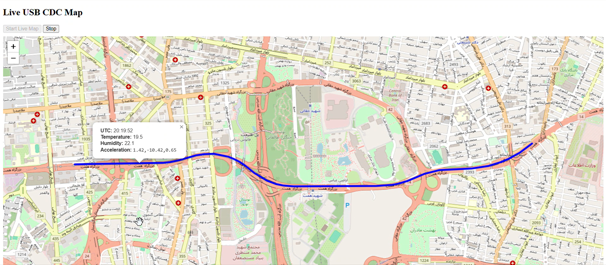

Open source · C / FreeRTOS / STM32CubeIDE
github.com/muhammadzareii/stm32-rtos-dataloggerProject Context
This was a paid contract project — a client needed a reliable, long-duration field datalogger for a multi-sensor payload. "Reliable" here meant: no data loss on power-off mid-write, no missed samples under the worst-case sensor interrupt storm, no silent failures, and recoverable logs after an unclean shutdown. The first version was a polling loop with filesystem (FatFS) writes. By version 5, it had become a proper RTOS design with raw sector I/O and triple-redundant write pointers.
The evolution from V1 (polling, FatFS) to V5 (RTOS, raw sectors) was driven by discovered failure modes: FatFS write latency caused sample drops at 100 Hz; the watchdog triggered during a long SD write cycle; a corrupt FAT table lost all data. Each failure produced a design revision.
RTOS Task Design
vTaskDelayUntil for jitter-free periodic execution. Higher priority pre-empts lower; task_accel at P6 is never delayed by I/O tasks below it.| Task | Priority | Rate | Function |
|---|---|---|---|
task_accel | P6 (highest) | 100 Hz | IMU read via PCA9548A I²C mux; push to ring buffer |
task_gps | P5 | 5 Hz | UART GPS NMEA sentence parse; extract lat/lon/time |
task_temp | P4 | 10 Hz | I²C temperature sensor reads; push to shared struct |
task_logger | P3 | 10 Hz | Assemble 70-byte binary packet; raw SD sector write |
task_watchdog | P2 | 2 Hz | Pet IWDG; check task liveness via heartbeat flags |
task_scan | P1 (lowest) | 0.5 Hz | RS232 telemetry; health and buffer status report |
Key Design Decisions
Jitter-free periodic scheduling
vTaskDelay(N) delays N ticks from the call site — any task runtime accumulates into the
period, causing drift. vTaskDelayUntil delays until an absolute tick count, absorbing
execution time. For a 100 Hz sensor logged over hours, the difference is measurable in timestamp
accuracy and matters for client data quality.
I²C address conflicts
Multiple sensors of the same family share the same 7-bit I²C address by default. An 8-channel I²C multiplexer (PCA9548A) resolves this cleanly: a single control-register write selects the active downstream channel. Switching overhead is negligible at 100 Hz.
Non-deterministic filesystem latency
FatFS write latency spikes at cluster boundaries (FAT table updates can stall for tens of milliseconds), which causes sample drops at 100 Hz. The solution is to bypass the filesystem and write binary-packed records directly to SD sectors via DMA — deterministic, fast, and reliable regardless of card geometry.
Power-cut recovery
The write address pointer must survive an unclean shutdown. A redundant pointer scheme — maintaining multiple consistent copies in reserved regions and using majority-vote recovery at startup — ensures the log is always recoverable without requiring a filesystem.
Hardware Photos

